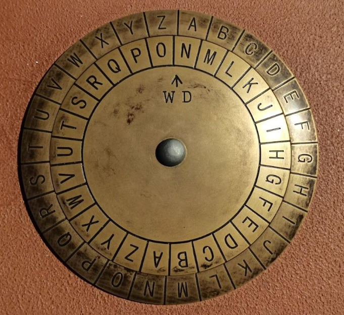

Историческая справка:
Шифр Цезаря считается одним из самых простых и наиболее широко известных методов шифрования. Он относится к шифру замены, в котором каждая буква открытого текста заменяется символом, находящимся на постоянном числе позиций левее или правее от него в алфавите.
Шифр был назван в честь римского императора Гая Юлия Цезаря, использовавшего его для тайной правительственной переписки. Кроме того, шифр Цезаря использовался российской армией во время I Мировой войны. Однако этот шифр легко взламывается либо частотным анализом, либо методом подбора, так как существует всего 32 возможных сдвига в русском алфавите.
Для реализации шифрования удобно использовать диск Цезаря, который состоит из внешнего и внутреннего дисков и сопоставляет исходный алфавит с алфавитом с указанным сдвигом. Кроме того, диск можно заменить на представление в виде таблицы.
